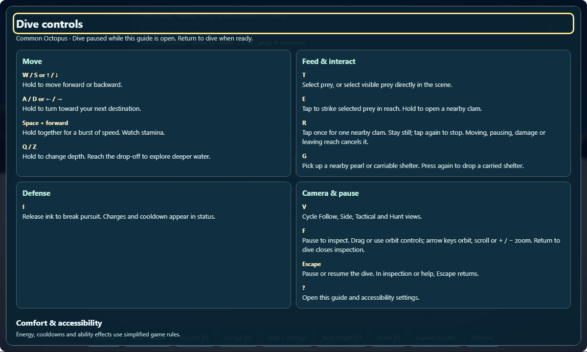
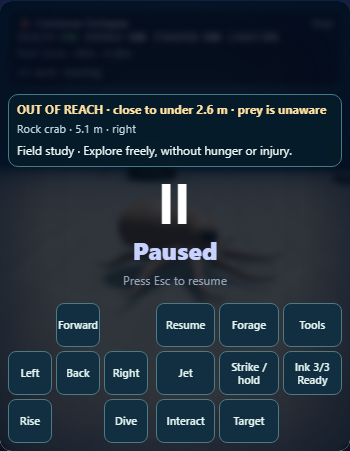
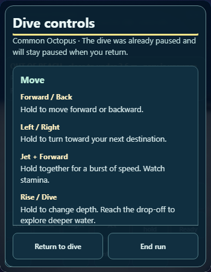
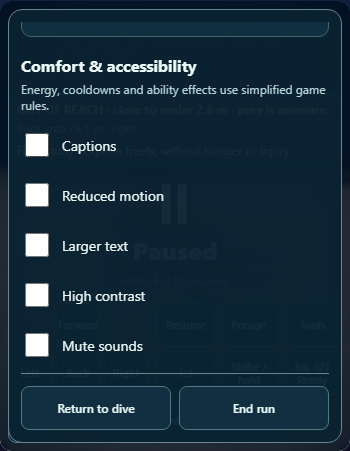
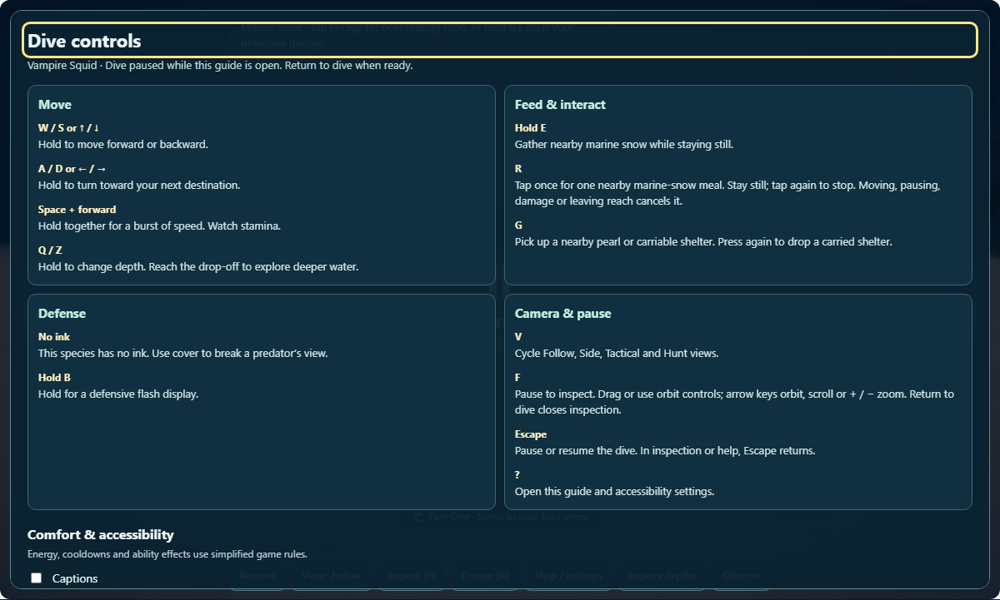
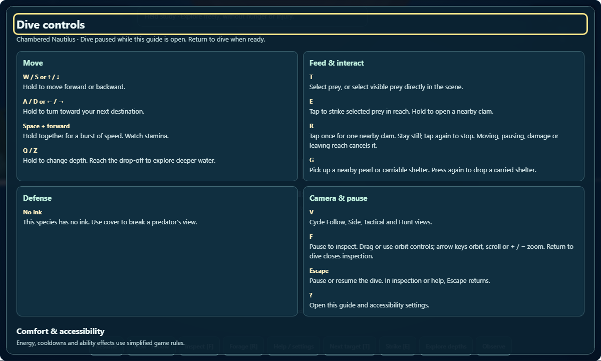

Cephalopod Hunter · Pass 69
More intuitive controls.
Use arrow keys or WASD to swim and turn. Press ? for a clear guide tailored to your species, V to change camera view, or F to inspect.
The Pause button now becomes Resume. Help remembers whether your dive was already paused, and keyboard focus stays inside the guide until you return.
Try the improved controls
71 focused tests · 17 native checks · Uncommitted

commonOcto · 1280px
commonOcto · 390px
commonOcto · 390px
commonOcto · 390px
vampireSquid · 1280px
nautilus · 1280pxDesktop Chromium with narrow viewport emulation. No physical-device or screen-reader testing is claimed.